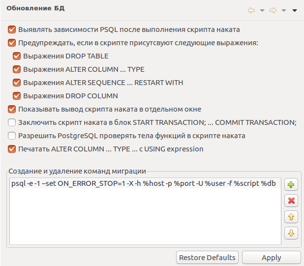

Обновление Базы Данных
Настройки, управляющие обновлением базы данных.

На странице настроек pgCodeKeeper -> Обновление БД Вы можете настроить параметры для
работы редактора скрипта наката.
- Включенный параметр "Выявлять зависимости PSQL после выполнения скрипта наката" позволяет добавлять дополнительные зависимости из сообщения об ошибке наката PSQL.
- Включенный параметр "Предупреждать, если в скрипте присутствуют следующие выражения:" позволяет получать предупреждать, если при генерирации скрипта образовались выбранные опасные выражения.
- Включенный параметр "Показывать вывод скрипт наката в отдельном окне" позволяет просмотреть сообщение с ответом сервера при выполнении наката.
- Включенный параметр "Заключить скрипт наката в блок START TRANSACTION; ... COMMIT TRANSACTION;" дополняет генерируемые скрипты парой start ... commit.
- Включенный параметр "Разрешить PostgreSQL проверять тела функций в скрипте наката" при генерации скрипта добавляет проверку "SET check_function_bodies = true;" в начало скрипта.
- Включенный параметр "Печатать ALTER COLUMN ... TYPE ... с USING expression" добавляет в скрипт выражение, позволяющее изменить тип данных, при изменении типа столбца
- Блок "Создание и удаление команд миграции" содержит историю внешних команд для выполнения скрипта.